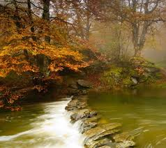

In nature, nothing is perfect and everything is perfect. Trees can be contorted, bent in weird ways, and they’re still beautiful. –Alice Walker

Nature does not hurry, yet everything is accomplished. —Lao Tzu
In nature, nothing is perfect and everything is perfect. Trees can be contorted, bent in weird ways, and they’re still beautiful. –Alice Walker
Nature does not hurry, yet everything is accomplished. —Lao Tzu
Study nature, love nature, stay close to nature. It will never fail you. —Frank Lloyd Wright
Adopt the pace of nature. Her secret is patience. —Ralph Waldo Emerson